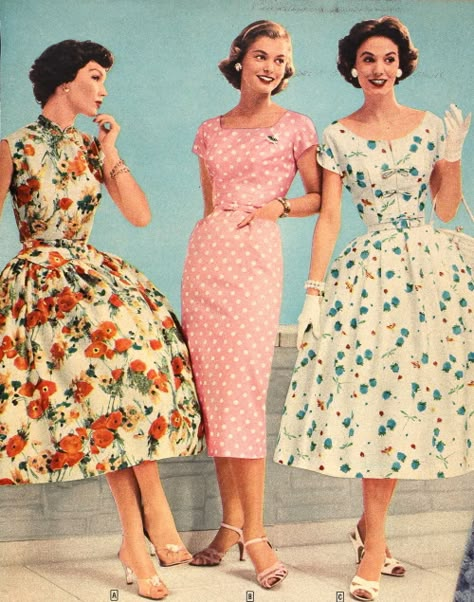
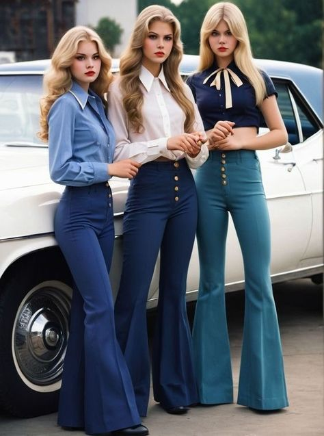

¿Qué es la moda vintage?
La moda vintage se refiere a la ropa y accesorios que están inspirados en estilos de épocas pasadas, generalmente desde la década de 1920 hasta la década de 1980. La moda vintage puede incluir prendas originales de esas épocas, así como reproducciones y reinterpretaciones modernas de estilos clásicos.


Tendencias Vintage
- Vestidos con estampados florales
- Blusas con cuello babero
- Faldas de talle alto
- Accesorios retro como gafas de sol estilo cat-eye
Comparación de Estilos Vintage
| Época | Características | Ejemplo |
|---|---|---|
| Años 20 | Vestidos con flecos y sombreros cloche |  |
| Años 50 | Faldas con vuelo y colores pastel |  |
| Años 70 | Pantalones acampanados y estampados psicodélicos |  |